-=Journey Into the West=-
| 2 Oct-Dulles | Solar: 4PM | Biological: 4PM |
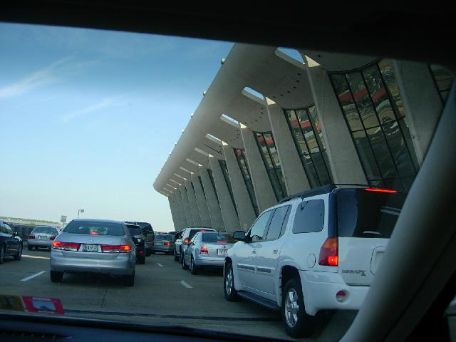 |
Got sent to secondary for non-removable yogic bangle. No cell phone after inspection. Thought TSA would get to buy me a new one, but when I called it from an inspector's phone, Chris answered. It was in his car. We arranged a handoff at the employee inspection point. Chris was really glad he didn't have to drop me off at BWI where flights are cheaper, then decided to drive up from Dulles to see his brother in Baltimore. Don't tell the accountants. |
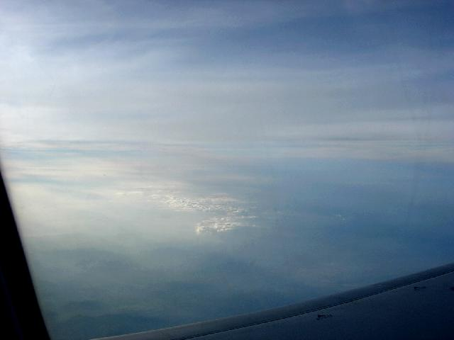 |
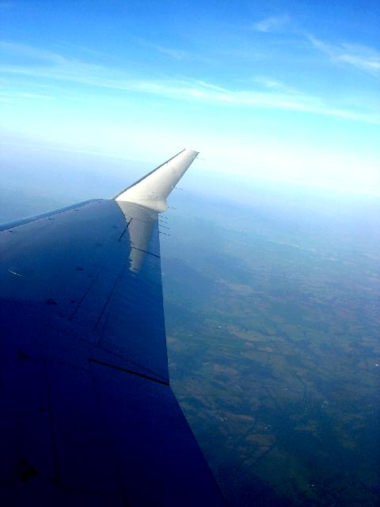 |
| 3-5 Oct-Austin | Solar: 6PM | Biological: 7PM |
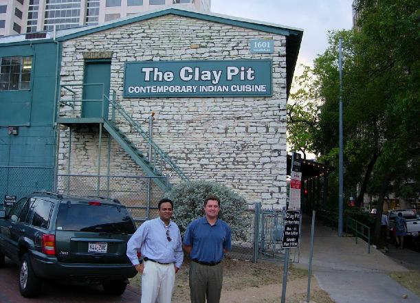 |
Fellow travelers Anil (L) and Peter(R) in front of one of the country's best Indian restaraunts. Peter will join me in Australia. Someone remarked that the Aussies combine the anger of the Irish with the laid-back of California. Perfect: I'm from LA, Peter's from Dublin. |
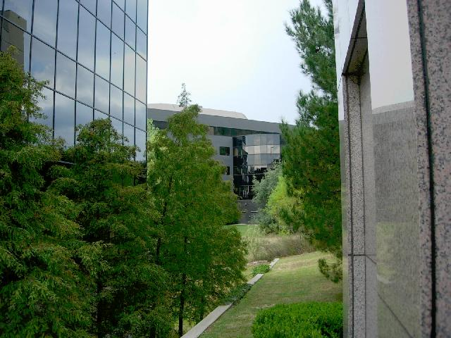 |
We spent three days having business and technical disussions at the campus of a software company with risk profiling product in use for passengers, cargo containers et al. With my mathematical background, Peter's service oriented architecture expertise, and another CSCer's operational knowledge, we never let our briefers stick to their script. We really wrung them out. We joked that in any briefing, we would never let them get past slide 1. I learned that: 1 - Some kinds of surveillance I would have though too compute-intensive to do, are being done. 2 - It's not always true that more horsepower means a bigger brother. Somtimes privacy is sacrificed in the name of computational tractability. 3 - The state of the art is better in places where I have the most privacy concerns, and worse where I wish the eye in the sky were omniscient. |
| 5-7 Oct-Los Angeles | Solar: 8PM | Biological: 11PM |
Slow Exposures (L) 737 passing overhead at 500 ft (Hertz parking lot at LAX) (R) instruments and freeway lights on 91 |
Surprise! A Santa Ana--hot dry orange blossom scented desert wind, sparking stars, pristine air except for the haze from all the fires. Makes me euphoric. Most people hate it. (L) Sunrise over suburbia (Villa Park, Orange County) (R) October in LA. The winter flowers are starting to bloom.
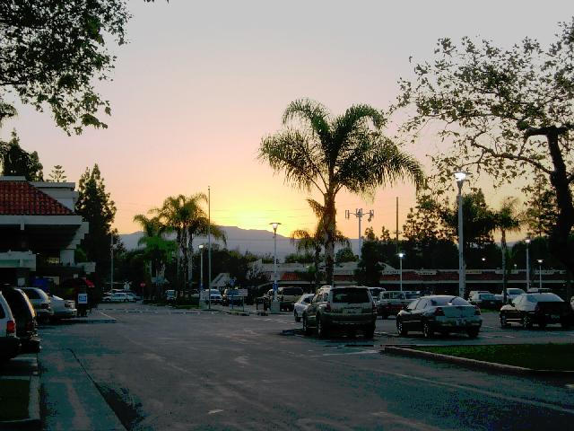 |
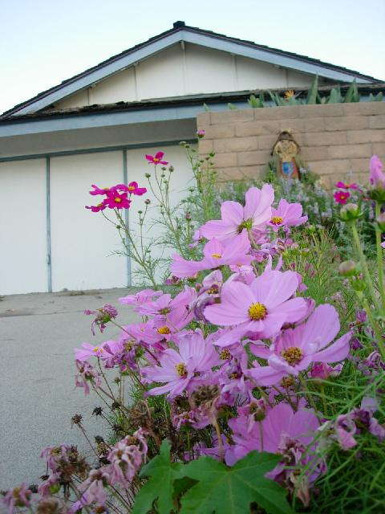 |
Visited Brian, Cathy and Mischief Master Connor. Brian insists I not post any pictures of his family. Brian spoke at the funeral of a friend who, riding his Honda GoldWing on the way to his job as a motorcycle test rider at Honda, was rear ended by a Honda, flipped over the rail, and creamed by a Honda.
In America, this is viewed as the Twilight Zone. In Tokyo, he is revered as the one American who truly understands the Japanese way.
Midday Thursday caught a flight to:
| 7 Oct-Honolulu | Solar: 3PM | Biological: 8PM |
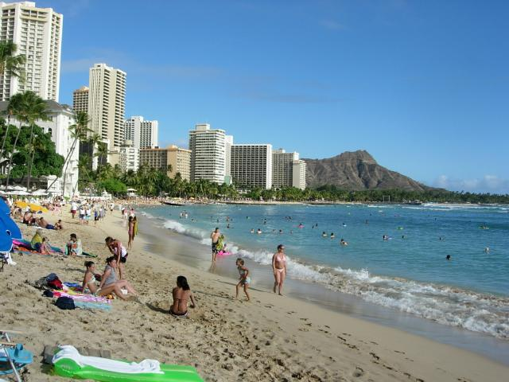
Headed straight for Waikiki. Met Dave and paddled around for an hour.
(L)Suzanne, Blythe and Hoku. (R) Bouganvillas by the marina. |
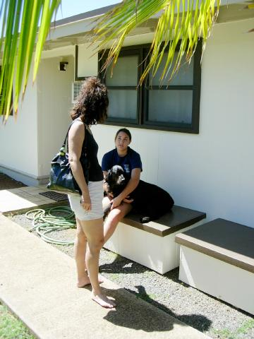 |
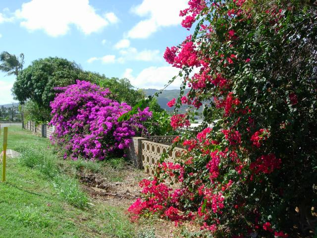 |
We spent the next morning snorkeling Hanauma (below).
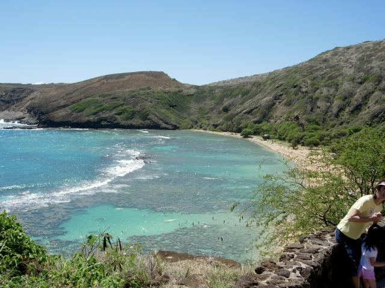
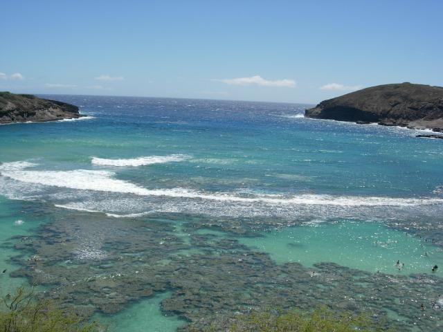
Dave after lunch at the marina
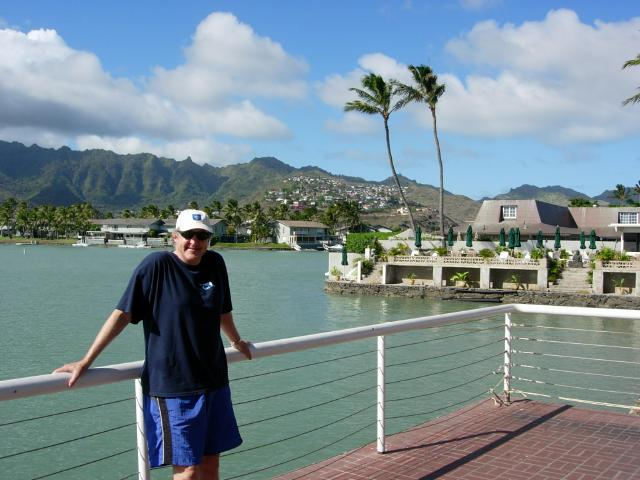
That evening, we caught Serenity with Daniel and his dawgs. They didn't want to be around parents, so they hung out separately, and had Taco Bell for dinner while Dave and I caught some good Thai in Hawaii Kai.
| 10 Oct-Sydney | Solar: 6:30AM | Biological: 8:30PM |
Writing this while waiting for a flight to Canberra. Sydney Airport is laid out a lot like Dulles--busses to satellite termials, is open to the are like Honolulu, but the temperature is like LA--mid 70s. Everything seems quite familar except that no one understand me when I talk.
The Security guy said "Good man, from the States?" when I took the laptop out of the bag at the X-ray point.
Crazily enough, my gradual approach to coming out, augmented by modafinil and ambien, seems to have worked. I stayed up past midnight in Honolulu (9AM was the latest I ever made it before). Stayed awake on the plane until about 2AM Hawaii time (outstanding starfield from 36,000 feet, Vega setting in the Pacific, got 8 hours of ambien-induced sleep, and I actually feel like it's morning. I bet Peter is zapped--he went straight through. Will see him this afternoon.
Caught a Dash-8 puddle jumper to:
| 10 Oct-Canberra | Solar: 10AM | Biological: Midnight |